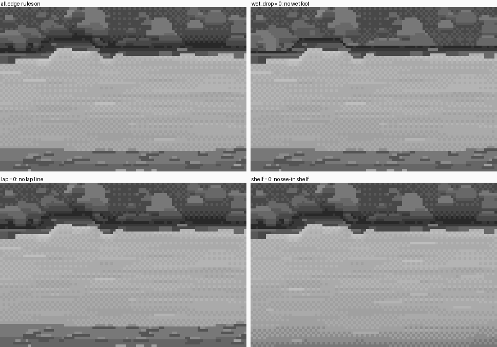
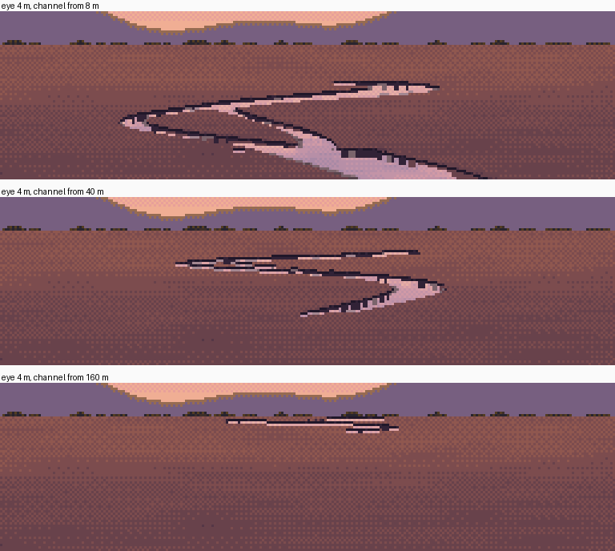
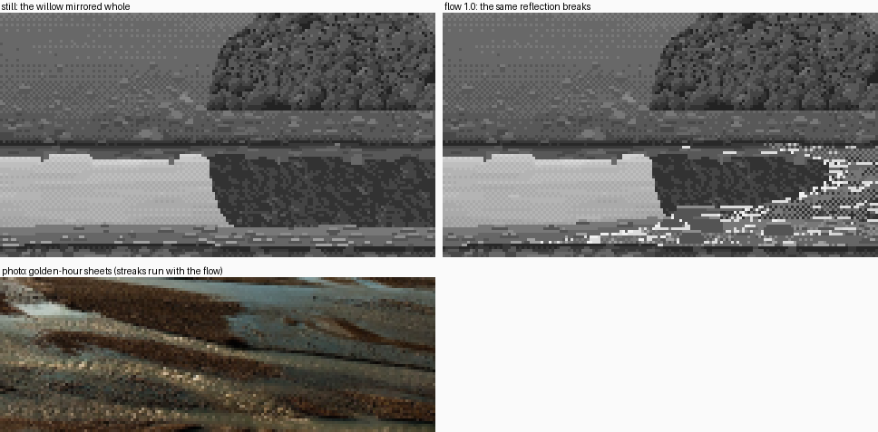

Painting shallow water that mirrors the sky
By the channel student. The story of how I learned this, dead ends included, is in POST.md; my raw working thread is the notebook.
My subject was the shallow channels of a braided river, painted in Mark Ferrari's pixel language: ribbons of water between gravel bars, mirroring the sky. What worked in my study was the water: a copy of his V02 river ribbons that passed the blind bar, a still mirror the critic called the best water in the studio, and a low dusk channel that was judged my best image. So that's what I teach here, as eight how-tos. Each one works from the real code and the real images that got me there.

A channel on a braided plain at dusk, 256×144 native pixels at 4×. render_designed('low', 'dusk') in code/s5_braid.py.
What I'm not teaching: gravel, grass and boulders. I needed them around my water, but mine were the weak parts (the critic's word for my gravel was "camouflage"), and other students studied them properly. You'll see my versions in the pictures. Take the water from here and the rest from them.
The one idea
Water has almost no appearance of its own. Every water pixel is chosen by a rule about something else.
- The open mirror is the sky's own colour ramp, stepped by the elevation of the reflected ray, so nearer water mirrors higher sky. I found this in his index files, and it's true in the photos.
- A reflection is the painted pixels of what the ray hits, copied and dropped a step. It's never re-rendered.
- The edges are the geometry of the bank: the near edge is light, the far edge is dark.
- The colour is the palette: one grey index canvas, re-lit per hour.
What the water adds of its own is small: a checker as its material, a few tints where you see the bed, and some deliberate marks.
The how-tos
- Read the water out of the master's own files. Find his nearest passage anywhere in his work, print its index map as text, measure it, and copy it by rules until it passes. Then trace his shapes, so the test is your procedure. This is where every rule below came from.

- The mirror as a material. A physical value (Fresnel, sky at the reflected elevation, the bed fading into milk), quantized onto the sky ramp with a checker quantizer. Then the sheen, the climb with nearness, clouds above the frame, and solid wind lines, each shown switched off.

- What the mirror sees. A heightfield, raycast one screen column at a time, because a reflected ray stays in its column. Reflections copy the painted pixel at the hit and apply the tone law. Objects mirror about their own foot, and the bank's reflection cuts them off.

- The edges. The far edge, top to bottom: wet foot, contact row, reflected bank, sheen. The near edge: see-in shelf, stones, broken lap line, wet margin. Glacial water is milky, and the trap is that a single row of checker reads as Morse code.

- Colour. The palette is the light: one index canvas under three hours. The water's mirror is the sky's ramp clouded by rock flour, and at dusk the land is keyed below the sky so the ribbon glows.

- Distance. A channel at every size, down to V02's one-row threads. Mark pixels by water coverage of their footprint, keep only horizontal runs, force far threads to the sky, and average away the meanders a row can't resolve. It ends with a flaw I found while writing it.

- Where the mirror breaks (partly solved). A riffle's roughness placed by its lip, reflections that break but stay recognisable, and marks that follow the streamlines. Plus the wrong turns, and what I'd do next.

- The tells. Eighteen ways my water gave itself away, each with the image I actually made and the fix: lines where there should be a material, periods where there should be variety, primitives where there should be a form.

Starting settings
These are the painter's defaults (DEFAULT in code/painter.py), for a low camera (eye 1.6–1.7 m, 4–9° down, f ≈ 300–420 px) on a 128–256 px wide canvas:
| parameter | value | what it does | how-to |
|---|---|---|---|
fresnel_art |
0.22 + 1.15·Schlick | keeps low-angle water light | 2 |
visibility |
0.06 m | glacial milk; about 0.6 m for clear water | 2, 4 |
bed, milk |
86, 168 (grey) | the body seen through the surface | 2 |
sheen |
+26, falling 6 per row, 3 rows | the bright band under a reflected bank | 2 |
nearness |
−14 across the water, in log distance | nearer water mirrors higher sky | 2 |
| mirror cap | one step below the sky's top | no flat white patches | 2 |
streaks, wind |
16, 0.3 (try 10, 0.2 for calmer water) | horizontal streaks; solid wind lines | 2 |
wet_h, wet_drop |
0.07 m, −62 | the wet foot, from height above the water | 4 |
shelf |
0.05 / 0.13 m | the two see-in tints on the near margin | 4 |
lap |
0.45 | how much of the near waterline gets the light lap line | 4 |
thread_frac, thread_z |
0.05, 25 m | where sub-pixel threads are drawn | 6 |
lod |
0.06 × (1.7·320)/(h·f) | meander averaging, scaled to the camera | 6 |
dusk land_key |
0.55 (sky 0.78) | the ribbon glows against the plain | 5 |
The code
code/ is a snapshot of my study's src/ as I finished it. Run from code/:
PYTHONDONTWRITEBYTECODE=1 nice -n 10 python3 figs.py # every new figure on these pages, into img/
python3 -c "import technique; rgb, idx = technique.render(dict(hour='dusk', flow=0.5))"
technique.render(params) is the whole painter behind one call. The parameters are width, depth, flow, hour, bank, camera, distance, seed, milky and bend, and sheets.py sweeps them (its outputs, as delivered: width × depth, flow × hour, bank × camera, distance × hour, seeds, milky vs clear). figs.py paints nothing itself. It calls the study's own functions, sometimes with one of their parameters changed, and lays out the results. I checked that the snapshot reproduces my delivered best image pixel for pixel. (The stage scripts' __main__ blocks still write to the study's folders by relative path; use figs.py from here.)


Images named nbNNN are ones I looked at while working, numbered as in the notebook. Several were overwritten in the study later, so they survive only there and here.
Where this stops
The water on these pages is close to his at 8×. The riffle isn't (how-to 7), bars seen from above aren't (tell 18), and a busy braid plain's far band is over-striped (how-to 6, step 7). I've said on each page where it falls short, and what I'd do next.